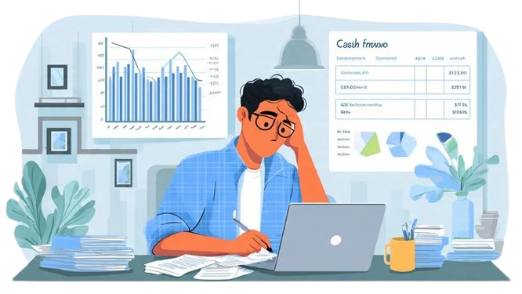
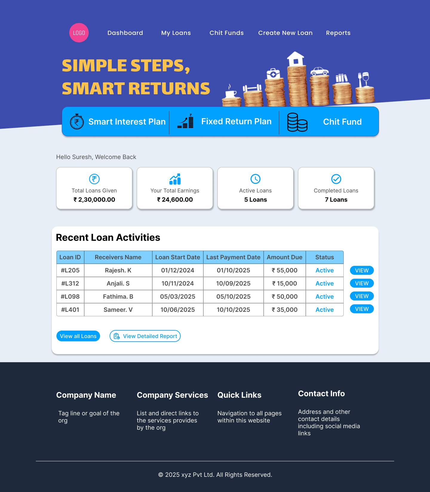
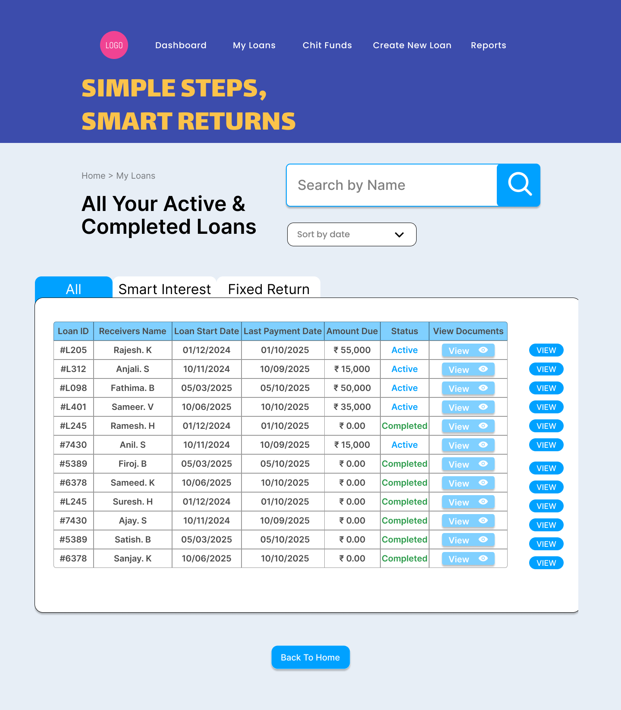
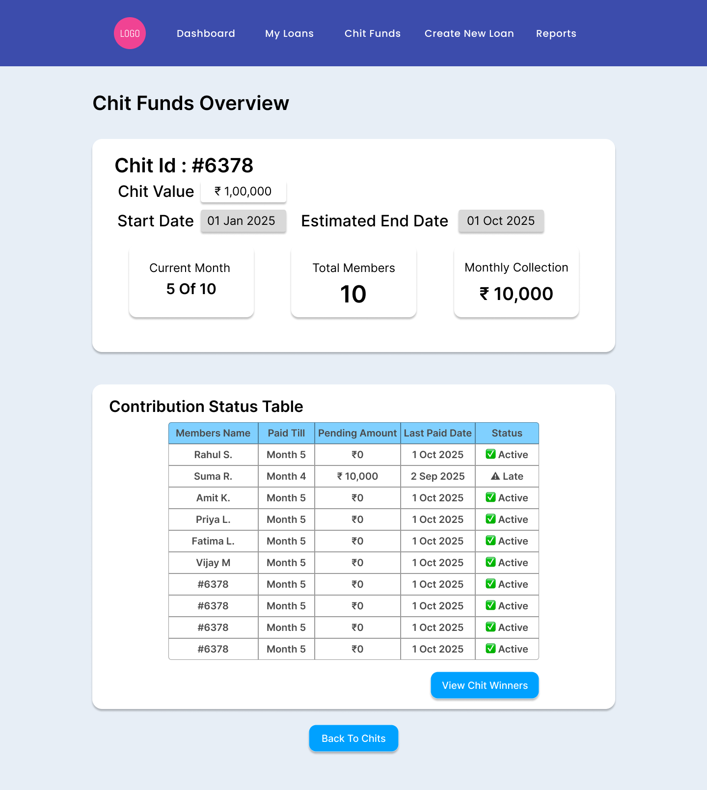
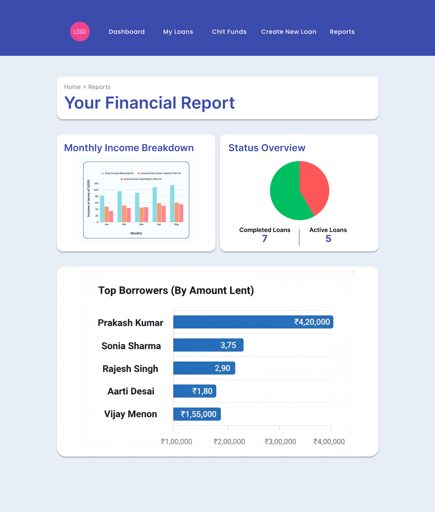

Simplifying Loan Tracking for Small Local Lenders
A local money lender was maintaining loan records using physical notebooks, Excel sheets, and manual
calculations.
This caused confusion in tracking repayments, manual interest miscalculations, difficulty identifying
overdue payments, and no centralized system.
The goal was to create a structured digital system that automates calculations and simplifies tracking.
Small local lenders lack an organized and automated system to manage loans.
The lender needed a system that reduces manual effort and prevents financial mistakes.

I directly spoke with the lender to understand how he tracks loans, where mistakes happen, how interest is calculated, and what information he checks daily.
Goal: Make loan tracking effortless and error-free.

The flow was designed to minimize steps while ensuring complete financial accuracy.





The lender described the tool as highly useful and suggested future advanced feature expansion.
This project is a financial loan management system designed for small local lenders, automating interest calculation, due tracking, and risk monitoring to eliminate manual errors and improve financial clarity.